# sets the directory of location of this script as the current directory
# setwd(dirname(rstudioapi::getSourceEditorContext()$path))
### load packages
require(pacman)
p_load('tidyverse', 'jsonlite',
'stargazer', 'DT', 'psych',
'writexl')
### load socio-demographic data
setwd("data demographic")
# prolific <- read.csv(file = "prolific_export_65d4744b1373145896174eba.csv", header = TRUE)
### load JATOS data
setwd("../data")
suppressMessages(
read_file('jatos_results_data_20250526134712.txt') %>%
# ... split it into lines ...
str_split('\n') %>% first() %>%
# ... filter empty rows ...
discard(function(x)
x == '') %>%
discard(function(x)
x == '\r') %>%
# ... parse JSON into a data.frame
map_dfr(fromJSON, flatten = TRUE)
) -> dat
# Read and parse each JSON line into a list
# json_data <- suppressMessages(
# read_file("jatos_results_data_20250405122610.txt") %>%
# str_split("\n") %>%
# first() %>%
# discard(~ .x == "" || .x == "\r") %>%
# map(~ fromJSON(.x, simplifyVector = FALSE)) # Keep full nested structure
# )
#> add ID counter
dat$ID <- NA
tmp_IDcounter <- 0
for (i in 1:nrow(dat)) {
if (!is.na(dat$sender[i]) &&
dat$sender[i] == "Greetings") {
tmp_IDcounter = tmp_IDcounter + 1
}
dat$ID[i] <- tmp_IDcounter
}
rm(tmp_IDcounter)
### load functions
setwd("../functions")
for(i in 1:length(dir())){
# print(dir()[i])
source(dir()[i], encoding = "utf-8")
}
rm(i)
### summary function
data_summary <- function(data, varname, groupnames){
require(plyr)
summary_func <- function(x, col){
c(mean = mean(x[[col]], na.rm=TRUE),
se = sd(x[[col]], na.rm=TRUE) / sqrt(length(x[[col]])))
}
data_sum<-ddply(data, groupnames, .fun=summary_func,
varname)
data_sum <- plyr::rename(data_sum, c("mean" = varname))
return(data_sum)
}Data preperation pilot study
1 Notes
2 global variables
Define your global variables (can take some time to run):
3 create raw data files
4 set up and save data in different formats
### keep only complete data sets
sort(table(dat$ID))
224 8 197 211 65 1 2 3 4 5 6 7 9 10 11 12 13 14 15 16
2 5 5 5 14 21 21 21 21 21 21 21 21 21 21 21 21 21 21 21
17 18 19 20 21 22 23 24 25 26 27 28 29 30 31 32 33 34 35 36
21 21 21 21 21 21 21 21 21 21 21 21 21 21 21 21 21 21 21 21
37 38 39 40 41 42 43 44 45 46 47 48 49 50 51 52 53 54 55 56
21 21 21 21 21 21 21 21 21 21 21 21 21 21 21 21 21 21 21 21
57 58 59 60 61 62 63 64 66 67 68 69 70 71 72 73 74 75 76 77
21 21 21 21 21 21 21 21 21 21 21 21 21 21 21 21 21 21 21 21
78 79 80 81 82 83 84 85 86 87 88 89 90 91 92 93 94 95 96 97
21 21 21 21 21 21 21 21 21 21 21 21 21 21 21 21 21 21 21 21
98 99 100 101 102 103 104 105 106 107 108 109 110 111 112 113 114 115 116 117
21 21 21 21 21 21 21 21 21 21 21 21 21 21 21 21 21 21 21 21
118 119 120 121 122 123 124 125 126 127 128 129 130 131 132 133 134 135 136 137
21 21 21 21 21 21 21 21 21 21 21 21 21 21 21 21 21 21 21 21
138 139 140 141 142 143 144 145 146 147 148 149 150 151 152 153 154 155 156 157
21 21 21 21 21 21 21 21 21 21 21 21 21 21 21 21 21 21 21 21
158 159 160 161 162 163 164 165 166 167 168 169 170 171 172 173 174 175 176 177
21 21 21 21 21 21 21 21 21 21 21 21 21 21 21 21 21 21 21 21
178 179 180 181 182 183 184 185 186 187 188 189 190 191 192 193 194 195 196 198
21 21 21 21 21 21 21 21 21 21 21 21 21 21 21 21 21 21 21 21
199 200 201 202 203 204 205 206 207 208 209 210 212 213 214 215 216 217 218 219
21 21 21 21 21 21 21 21 21 21 21 21 21 21 21 21 21 21 21 21
220 221 222 223 225 226 227 228 229 230 231 232 233
21 21 21 21 21 21 21 21 21 21 21 21 21 sum(table(dat$ID) != max(table(dat$ID)))[1] 5sum(table(dat$ID) == max(table(dat$ID)))[1] 228dim(dat)[1] 4819 67dat <-
dat[dat$ID %in% names(table(dat$ID))[table(dat$ID) == max(table(dat$ID))], ]
dim(dat)[1] 4788 67str_subset(string = colnames(dat), pattern = "^ATI|^HEXACO") [1] "ATI-6" "ATI-5" "ATI-2"
[4] "ATI-1" "ATI-3" "ATI-4"
[7] "ATI-8" "ATI-7" "ATI-9"
[10] "HEXACO-OtE_I_01" "HEXACO-OtE_AA_02" "HEXACO-OtE_U_02"
[13] "HEXACO-OtE_I_02r" "HEXACO-OtE_C_01" "HEXACO-OtE_C_03r"
[16] "HEXACO-OtE_U_03r" "HEXACO-OtE_U_01r" "HEXACO-OtE_C_02"
[19] "HEXACO-OtE_AA_01r"str_subset(string = colnames(dat), pattern = "^HEXACO") [1] "HEXACO-OtE_I_01" "HEXACO-OtE_AA_02" "HEXACO-OtE_U_02"
[4] "HEXACO-OtE_I_02r" "HEXACO-OtE_C_01" "HEXACO-OtE_C_03r"
[7] "HEXACO-OtE_U_03r" "HEXACO-OtE_U_01r" "HEXACO-OtE_C_02"
[10] "HEXACO-OtE_AA_01r"### json (from JATOS) to 2D data.frame
# > pre study
# add paradata
tmp_notNumeric <- c(str_subset(string = colnames(dat), pattern = "^meta"))
tmp_notNumeric <-
str_subset(string = tmp_notNumeric,
pattern = "labjs|location",
negate = TRUE)
### get survey
vec_ques <- c("PROLIFIC_PID",
"dummy_informedconsent",
"commCheck",
str_subset(string = colnames(dat), pattern = "^ATI|^HEXACO"),
"feedback_conscientiousCompletion",
tmp_notNumeric)
vec_notNumeric = c("PROLIFIC_PID", "feedback_critic", tmp_notNumeric)
questionnaire <- questionnairetype(
dataset = dat,
listvars = vec_ques,
notNumeric = vec_notNumeric,
verbose = FALSE
)
dim(questionnaire)[1] 228 37psych::cor.plot(r = cor(questionnaire[, str_subset(string = colnames(questionnaire), pattern = "^ATI")]))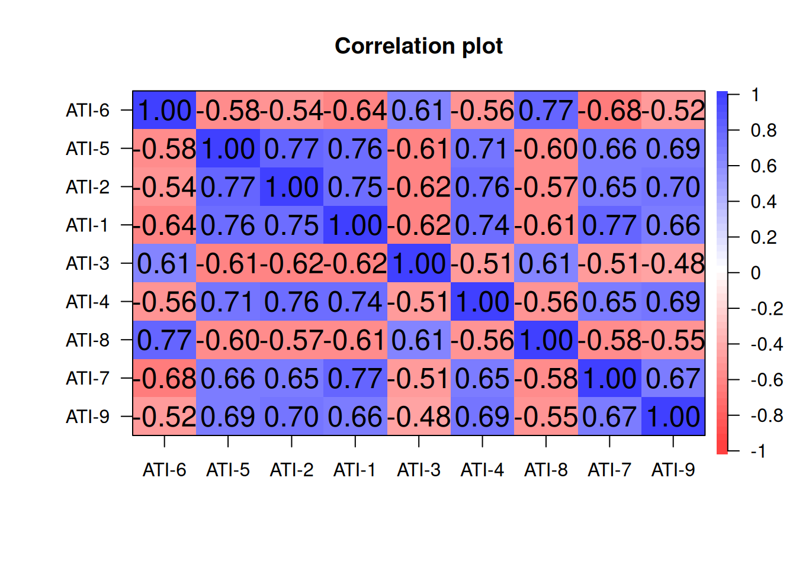
psych::cor.plot(r = cor(questionnaire[, str_subset(string = colnames(questionnaire), pattern = "^HEXACO")]))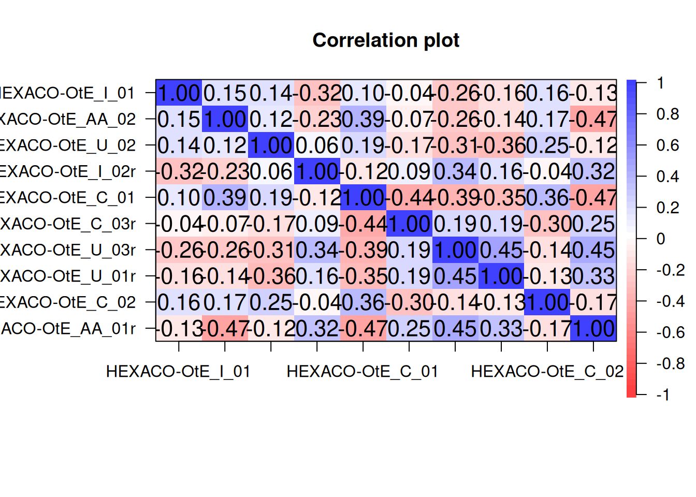
# Pre-define the column names with rat_ pattern
rat_cols <- str_subset(string = colnames(dat), pattern = "^rat_")
# Create an empty list to store processed data
result_list <- list()
# Loop over each unique ID
for (i in unique(dat$ID)) {
tmp <- dat[dat$ID == i, c("ID", "PROLIFIC_PID", "Vignette", rat_cols)]
# Fill down PROLIFIC_PID if missing
tmp <- tmp %>%
fill(PROLIFIC_PID, .direction = "downup")
# Filter rows where all rat_ columns are not NA
tmp <- tmp %>%
filter(if_any(all_of(rat_cols), ~ !is.na(.)))
# Append to result list
result_list[[as.character(i)]] <- tmp
}
# Combine all into one dataframe
questionnaire_rating_long <- bind_rows(result_list)
questionnaire_rating_long$Vignette <- factor(questionnaire_rating_long$Vignette)
questionnaire_rating_long <- questionnaire_rating_long %>%
mutate(across(starts_with("rat_"), as.numeric))summary_stats <- questionnaire_rating_long %>%
group_by(Vignette) %>%
summarise(
N = n(),
across(
.cols = starts_with("rat_"),
.fns = list(mean = ~ mean(as.numeric(.), na.rm = TRUE),
sd = ~ sd(as.numeric(.), na.rm = TRUE)),
.names = "{.col}_{.fn}"
)
)
summary_stats# A tibble: 6 × 10
Vignette N rat_helpful_mean rat_helpful_sd rat_trust_mean rat_trust_sd
<fct> <int> <dbl> <dbl> <dbl> <dbl>
1 1 228 2.58 1.84 3.02 2.01
2 2 228 5.82 2.07 5.15 2.01
3 3 228 6.15 2.08 5.15 2.04
4 4 228 7.56 1.68 5.87 1.95
5 5 228 7.78 1.63 6.04 1.95
6 6 228 7.82 1.53 6.23 1.97
# ℹ 4 more variables: rat_buy_mean <dbl>, rat_buy_sd <dbl>,
# rat_emotion_mean <dbl>, rat_emotion_sd <dbl># Pivot longer for ggplot
summary_long <- summary_stats %>%
pivot_longer(
cols = -c(Vignette, N),
names_to = c("Rating", ".value"),
names_pattern = "(rat_.*)_(mean|sd)"
)
ggplot(summary_long, aes(x = Vignette, y = mean, fill = Rating)) +
geom_col(position = position_dodge(width = 0.9), width = 0.7) +
geom_errorbar(
aes(ymin = mean - sd, ymax = mean + sd),
position = position_dodge(width = 0.9),
width = 0.2
) +
facet_wrap(~ Rating, scales = "free_y") +
labs(
title = "Mean Ratings per Vignette",
y = "Mean Rating ± SD",
x = "Vignette"
) +
theme_minimal() +
theme(legend.position = "none")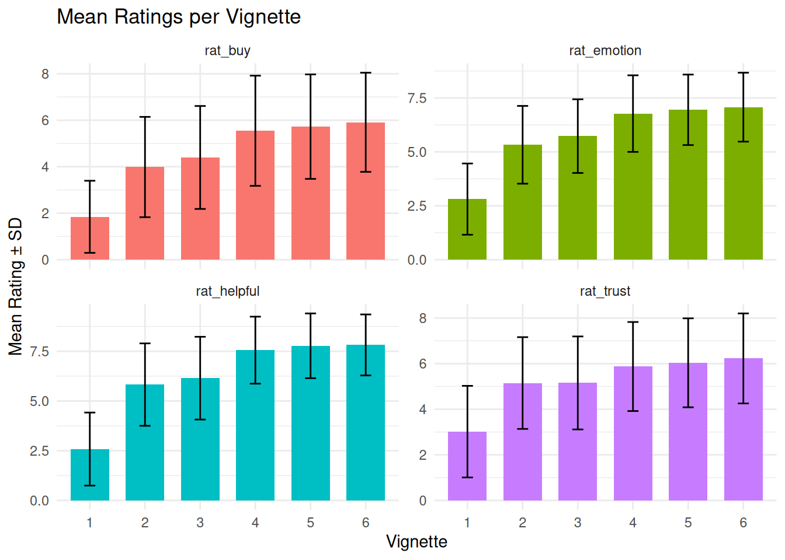
# library(ggstatsplot)
# # One plot for a single rating variable, e.g., rat_helpful
# ggbetweenstats(
# data = questionnaire_rating_long,
# x = Vignette,
# y = as.numeric(rat_helpful),
# title = "Comparison of 'Helpful' Ratings Across Vignettes",
# xlab = "Vignette",
# ylab = "Helpful Rating",
# type = "parametric", # or "nonparametric"
# messages = FALSE
# )library(afex)Loading required package: lme4Loading required package: Matrix
Attaching package: 'Matrix'The following objects are masked from 'package:tidyr':
expand, pack, unpack************
Welcome to afex. For support visit: http://afex.singmann.science/- Functions for ANOVAs: aov_car(), aov_ez(), and aov_4()
- Methods for calculating p-values with mixed(): 'S', 'KR', 'LRT', and 'PB'
- 'afex_aov' and 'mixed' objects can be passed to emmeans() for follow-up tests
- Get and set global package options with: afex_options()
- Set sum-to-zero contrasts globally: set_sum_contrasts()
- For example analyses see: browseVignettes("afex")
************
Attaching package: 'afex'The following object is masked from 'package:lme4':
lmer# Run repeated measures ANOVA (within-subjects)
anova_result <- aov_ez(
id = "PROLIFIC_PID",
dv = "rat_helpful",
data = questionnaire_rating_long,
within = "Vignette", # <- not between
type = 3
)
summary(anova_result)
Univariate Type III Repeated-Measures ANOVA Assuming Sphericity
Sum Sq num Df Error SS den Df F value Pr(>F)
(Intercept) 54039 1 1798.8 227 6819.43 < 2.2e-16 ***
Vignette 4590 5 2704.0 1135 385.33 < 2.2e-16 ***
---
Signif. codes: 0 '***' 0.001 '**' 0.01 '*' 0.05 '.' 0.1 ' ' 1
Mauchly Tests for Sphericity
Test statistic p-value
Vignette 0.4972 2.5114e-26
Greenhouse-Geisser and Huynh-Feldt Corrections
for Departure from Sphericity
GG eps Pr(>F[GG])
Vignette 0.80813 < 2.2e-16 ***
---
Signif. codes: 0 '***' 0.001 '**' 0.01 '*' 0.05 '.' 0.1 ' ' 1
HF eps Pr(>F[HF])
Vignette 0.8246034 8.657413e-200library(emmeans)
# Get estimated marginal means and post hoc comparisons
emmeans_result <- emmeans(anova_result, pairwise ~ Vignette)
emmeans_result$contrasts contrast estimate SE df t.ratio p.value
X1 - X2 -3.2412 0.1606 227 -20.176 <.0001
X1 - X3 -3.5658 0.1489 227 -23.942 <.0001
X1 - X4 -4.9737 0.1617 227 -30.752 <.0001
X1 - X5 -5.1930 0.1618 227 -32.088 <.0001
X1 - X6 -5.2368 0.1555 227 -33.681 <.0001
X2 - X3 -0.3246 0.1701 227 -1.908 0.4001
X2 - X4 -1.7325 0.1408 227 -12.301 <.0001
X2 - X5 -1.9518 0.1574 227 -12.399 <.0001
X2 - X6 -1.9956 0.1557 227 -12.816 <.0001
X3 - X4 -1.4079 0.1382 227 -10.184 <.0001
X3 - X5 -1.6272 0.1451 227 -11.216 <.0001
X3 - X6 -1.6711 0.1336 227 -12.504 <.0001
X4 - X5 -0.2193 0.1128 227 -1.943 0.3786
X4 - X6 -0.2632 0.1105 227 -2.381 0.1673
X5 - X6 -0.0439 0.0905 227 -0.485 0.9967
P value adjustment: tukey method for comparing a family of 6 estimates library(psych)
library(dplyr)
library(ggplot2)
library(cluster)
library(factoextra) # for fviz_cluster, optional visualizationWelcome! Want to learn more? See two factoextra-related books at https://goo.gl/ve3WBarat_vars <- c("rat_helpful", "rat_trust", "rat_buy", "rat_emotion")
unique_vignettes <- sort(unique(questionnaire_rating_long$Vignette))
for (v in unique_vignettes) {
cat("\n=== Vignette:", v, "===\n")
# Subset and clean data
vignette_data <- questionnaire_rating_long %>%
filter(Vignette == v) %>%
select(all_of(rat_vars)) %>%
na.omit()
# Check if enough data
if (nrow(vignette_data) >= 5) {
# 1. Correlation matrix plot
cat("Correlation matrix:\n")
corPlot(cor(vignette_data), main = paste("Correlation Plot - Vignette", v))
# 2. Parallel analysis (scree plot)
cat("Parallel analysis:\n")
efa_parallel <- fa.parallel(vignette_data, fa = "fa", fm = "ml", main = paste("Parallel Analysis - Vignette", v))
# 3. Optional: Run EFA with 1 factor if unidimensional
efa <- fa(vignette_data, nfactors = efa_parallel$nfact, fm = "ml")
print(efa$loadings)
# 4. K-means clustering (set k = 2 or pick adaptively)
vignette_scaled <- scale(vignette_data)
cat("Selecting optimal number of clusters (k):\n")
# Use elbow method to find optimal k
nb <- fviz_nbclust(
vignette_scaled,
FUNcluster = kmeans,
method = "wss",
k.max = 6,
nstart = 25 # needed by kmeans
)
print(nb)
# Extract optimal k (visually, or use function if needed)
optimal_k <- which.min(diff(diff(nb$data$y))) + 1
cat("Auto-selected k =", optimal_k, "\n")
set.seed(123)
km <- kmeans(vignette_scaled, centers = optimal_k, nstart = 25)
cat("K-means clustering results (k =", optimal_k, "):\n")
print(km$size)
print(km$centers)
# 5. Plot clusters using PCA
fviz_cluster(km, data = vignette_scaled, main = paste("K-Means Clusters - Vignette", v))
} else {
cat("Not enough complete responses for Vignette", v, "\n")
}
}
=== Vignette: 1 ===
Correlation matrix:
Parallel analysis:Parallel analysis suggests that the number of factors = 1 and the number of components = NA
Loadings:
ML1
rat_helpful 0.900
rat_trust 0.714
rat_buy 0.836
rat_emotion 0.807
ML1
SS loadings 2.672
Proportion Var 0.668
Selecting optimal number of clusters (k):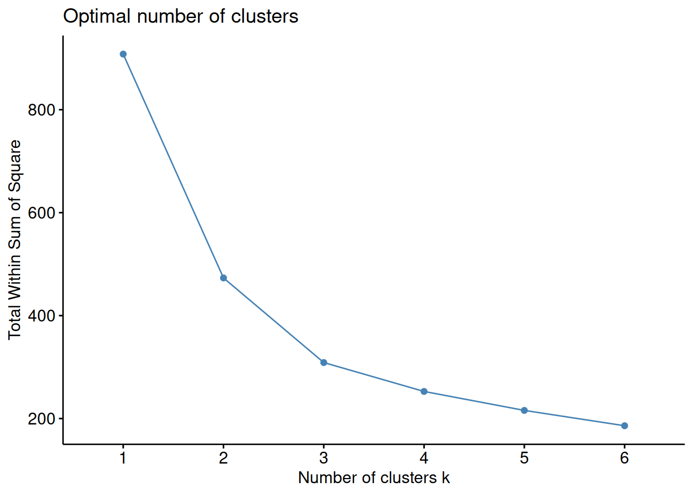
Auto-selected k = 5
K-means clustering results (k = 5 ):
[1] 81 38 66 28 15
rat_helpful rat_trust rat_buy rat_emotion
1 -0.75468428 -0.8200138 -0.5459934 -0.7904845
2 0.98645931 0.7380124 0.5063877 0.9429737
3 -0.08663818 -0.3406211 -0.2528081 0.1142193
4 -0.18152762 1.2358433 -0.2234895 -0.4481497
5 2.29632441 1.7502686 3.1950515 2.2137304
=== Vignette: 2 ===
Correlation matrix:
Parallel analysis:Parallel analysis suggests that the number of factors = 1 and the number of components = NA
Loadings:
ML1
rat_helpful 0.851
rat_trust 0.778
rat_buy 0.856
rat_emotion 0.857
ML1
SS loadings 2.797
Proportion Var 0.699
Selecting optimal number of clusters (k):
Auto-selected k = 5
K-means clustering results (k = 5 ):
[1] 70 38 36 50 34
rat_helpful rat_trust rat_buy rat_emotion
1 -0.5150499 -0.32262545 -0.576499155 -0.42795223
2 -1.3502070 -1.40821649 -1.189062174 -1.26217767
3 0.9156576 0.02252565 -0.006775283 0.63392610
4 0.2873105 0.69129042 0.682704620 0.08375607
5 1.1774164 1.19766363 1.519058312 1.49736072
=== Vignette: 3 ===
Correlation matrix: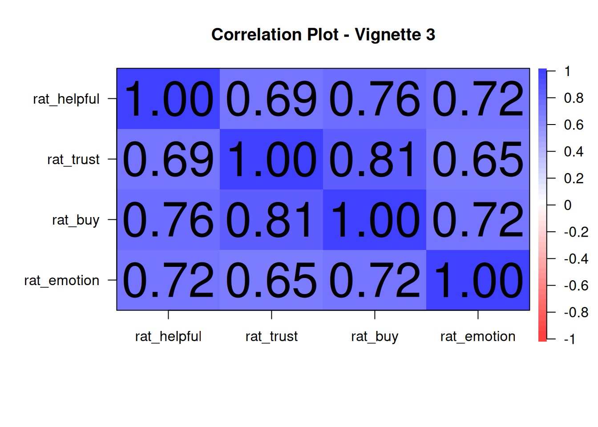
Parallel analysis: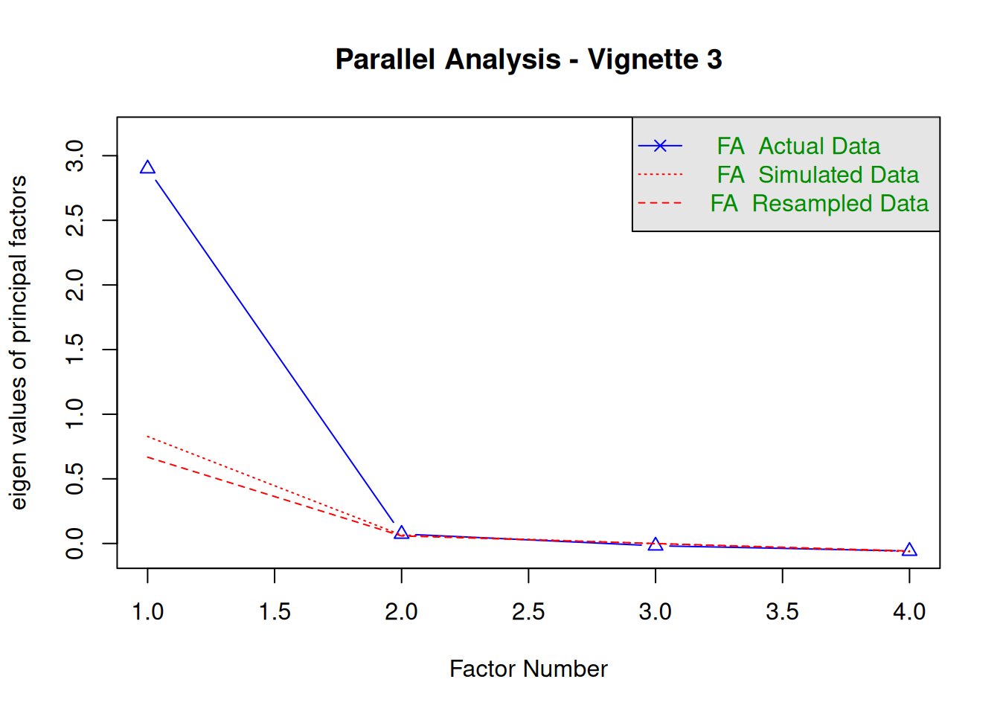
Parallel analysis suggests that the number of factors = 1 and the number of components = NA
Loadings:
ML1
rat_helpful 0.832
rat_trust 0.854
rat_buy 0.923
rat_emotion 0.789
ML1
SS loadings 2.897
Proportion Var 0.724
Selecting optimal number of clusters (k):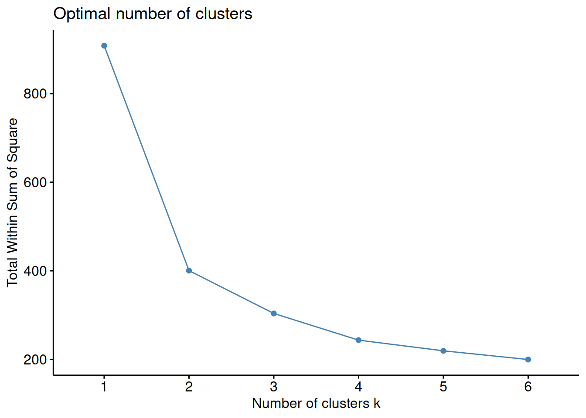
Auto-selected k = 5
K-means clustering results (k = 5 ):
[1] 22 66 26 58 56
rat_helpful rat_trust rat_buy rat_emotion
1 0.2341506 -1.0562321 -0.8577898 -0.1892581
2 0.2632758 0.4449043 0.3261510 0.1743228
3 -1.6612226 -1.6221593 -1.3963276 -1.4416678
4 1.0468921 1.0071257 1.2370562 1.1455025
5 -0.7152763 -0.3993522 -0.6803453 -0.6481680
=== Vignette: 4 ===
Correlation matrix:
Parallel analysis: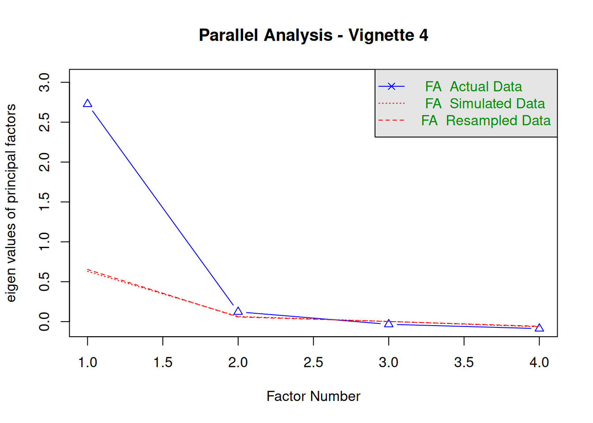
Parallel analysis suggests that the number of factors = 1 and the number of components = NA
Loadings:
ML1
rat_helpful 0.752
rat_trust 0.820
rat_buy 0.893
rat_emotion 0.832
ML1
SS loadings 2.726
Proportion Var 0.682
Selecting optimal number of clusters (k):
Auto-selected k = 5
K-means clustering results (k = 5 ):
[1] 71 15 42 40 60
rat_helpful rat_trust rat_buy rat_emotion
1 -0.1216284 0.32484567 0.1074379 -0.06440111
2 -2.3092531 -1.71042778 -1.6944326 -1.71387683
3 1.0261281 1.23585451 1.3060337 1.23901938
4 0.7823343 -0.02448603 0.4438769 0.61880390
5 -0.5186057 -0.80556790 -0.9136683 -0.77517231
=== Vignette: 5 ===
Correlation matrix:
Parallel analysis: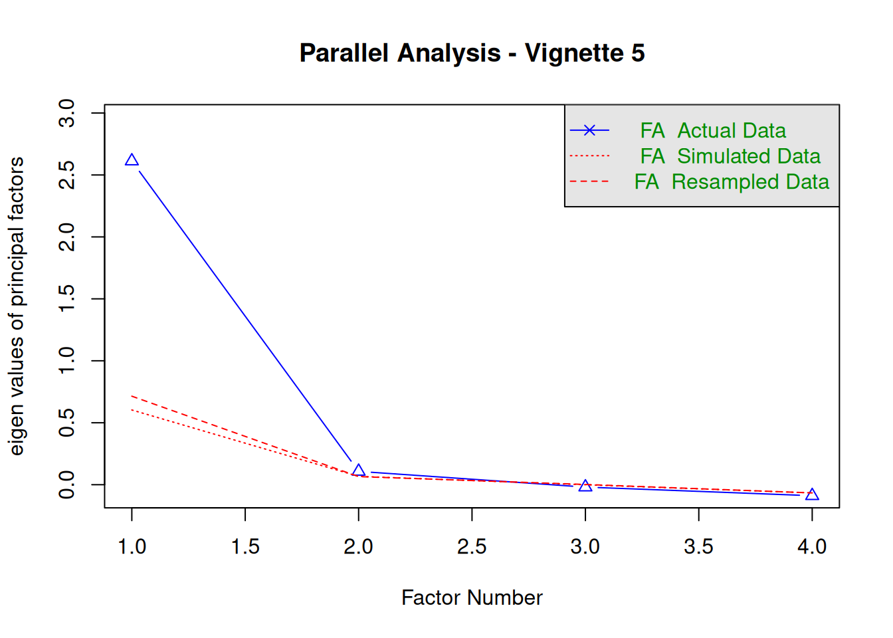
Parallel analysis suggests that the number of factors = 1 and the number of components = NA
Loadings:
ML1
rat_helpful 0.723
rat_trust 0.795
rat_buy 0.904
rat_emotion 0.800
ML1
SS loadings 2.611
Proportion Var 0.653
Selecting optimal number of clusters (k):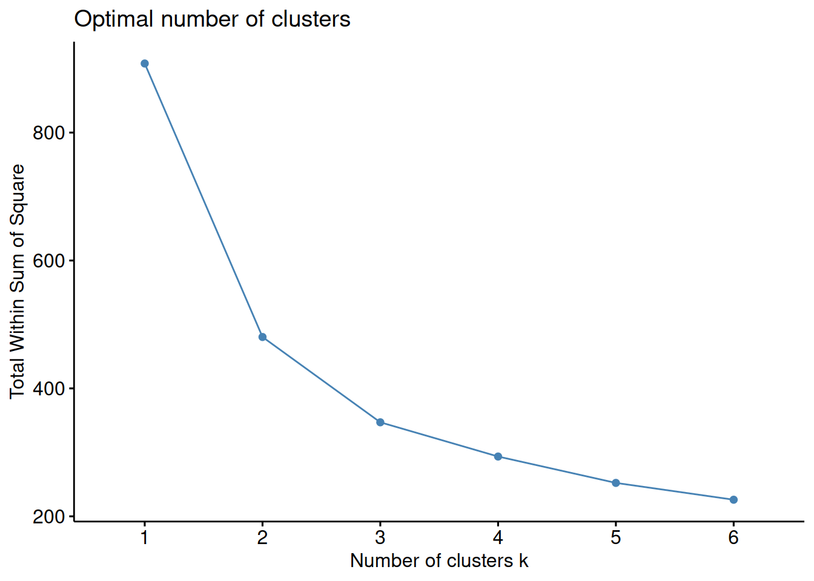
Auto-selected k = 4
K-means clustering results (k = 4 ):
[1] 44 71 33 80
rat_helpful rat_trust rat_buy rat_emotion
1 0.4724616 -1.0316500 -0.4637776 -0.1651466
2 -0.3384425 0.1408634 -0.0838971 -0.2720743
3 -1.7054175 -1.1520467 -1.5226744 -1.3980136
4 0.7439985 0.9176105 0.9576396 0.9089772
=== Vignette: 6 ===
Correlation matrix: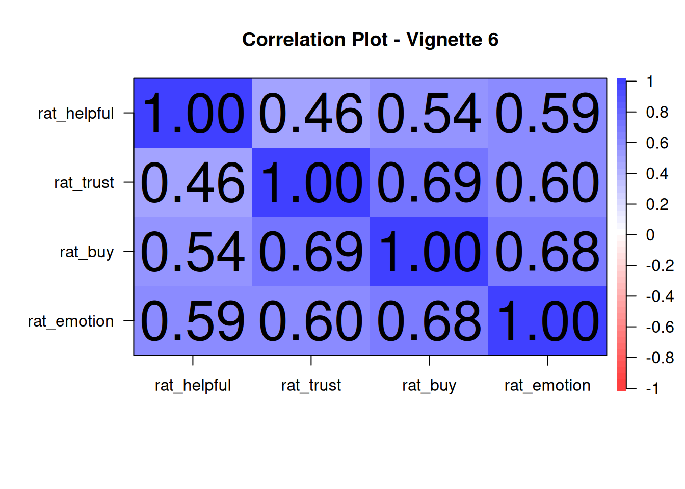
Parallel analysis:Parallel analysis suggests that the number of factors = 2 and the number of components = NA Loading required namespace: GPArotation
Loadings:
ML1 ML2
rat_helpful 0.772
rat_trust 0.857
rat_buy 0.731 0.156
rat_emotion 0.237 0.618
ML1 ML2
SS loadings 1.328 1.005
Proportion Var 0.332 0.251
Cumulative Var 0.332 0.583
Selecting optimal number of clusters (k):
Auto-selected k = 5
K-means clustering results (k = 5 ):
[1] 52 28 65 57 26
rat_helpful rat_trust rat_buy rat_emotion
1 0.85730371 1.1219578 1.060187853 0.9521327
2 1.02573408 -0.6222652 0.007639446 0.6014390
3 -0.05329542 0.4067289 0.336931212 0.1747617
4 -0.56926198 -0.4533646 -0.534761221 -0.7053382
5 -1.43800814 -1.5966914 -1.798569693 -1.4425549library(psych)
library(dplyr)
library(ggplot2)
library(cluster)
library(factoextra)
rat_vars <- c("rat_helpful", "rat_trust", "rat_buy", "rat_emotion")
unique_vignettes <- sort(unique(questionnaire_rating_long$Vignette))
# === NEW: list to store assignments ===
cluster_assignments <- list()
for (v in unique_vignettes) {
cat("\n=== Vignette:", v, "===\n")
# Subset and clean data
vignette_subset <- questionnaire_rating_long %>%
filter(Vignette == v) %>%
select(PROLIFIC_PID, all_of(rat_vars)) %>%
na.omit()
# Keep PID separate and scale only the rating data
pids <- vignette_subset$PROLIFIC_PID
vignette_data <- vignette_subset %>% select(-PROLIFIC_PID)
if (nrow(vignette_data) >= 5) {
# 1. Correlation matrix plot
cat("Correlation matrix:\n")
corPlot(cor(vignette_data), main = paste("Correlation Plot - Vignette", v))
# 2. Parallel analysis
cat("Parallel analysis:\n")
efa_parallel <- fa.parallel(vignette_data, fa = "fa", fm = "ml", main = paste("Parallel Analysis - Vignette", v))
# 3. Run EFA
efa <- fa(vignette_data, nfactors = efa_parallel$nfact, fm = "ml")
print(efa$loadings)
# 4. K-means clustering
vignette_scaled <- scale(vignette_data)
cat("Selecting optimal number of clusters (k):\n")
nb <- fviz_nbclust(
vignette_scaled,
FUNcluster = kmeans,
method = "wss",
k.max = 6,
nstart = 25
)
print(nb)
optimal_k <- which.min(diff(diff(nb$data$y))) + 1
cat("Auto-selected k =", optimal_k, "\n")
set.seed(123)
km <- kmeans(vignette_scaled, centers = optimal_k, nstart = 25)
cat("K-means clustering results (k =", optimal_k, "):\n")
print(km$size)
# 5. Plot clusters
fviz_cluster(km, data = vignette_scaled, main = paste("K-Means Clusters - Vignette", v))
# === NEW: store cluster assignments ===
cluster_assignments[[as.character(v)]] <- data.frame(
PROLIFIC_PID = pids,
Vignette = v,
Cluster = km$cluster
)
} else {
cat("Not enough complete responses for Vignette", v, "\n")
}
}
=== Vignette: 1 ===
Correlation matrix: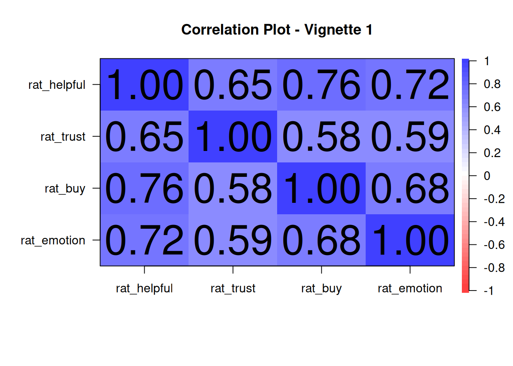
Parallel analysis: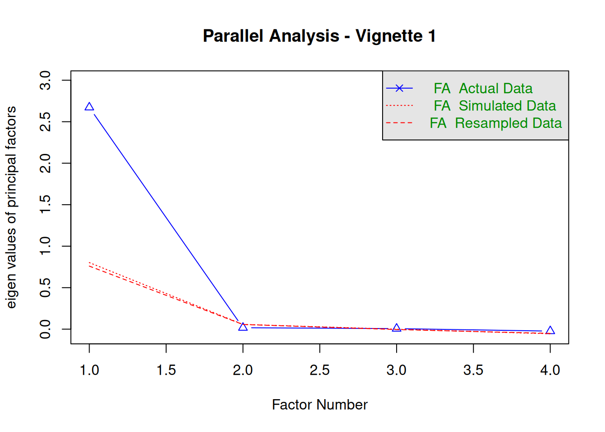
Parallel analysis suggests that the number of factors = 1 and the number of components = NA
Loadings:
ML1
rat_helpful 0.900
rat_trust 0.714
rat_buy 0.836
rat_emotion 0.807
ML1
SS loadings 2.672
Proportion Var 0.668
Selecting optimal number of clusters (k):
Auto-selected k = 5
K-means clustering results (k = 5 ):
[1] 81 38 66 28 15
=== Vignette: 2 ===
Correlation matrix: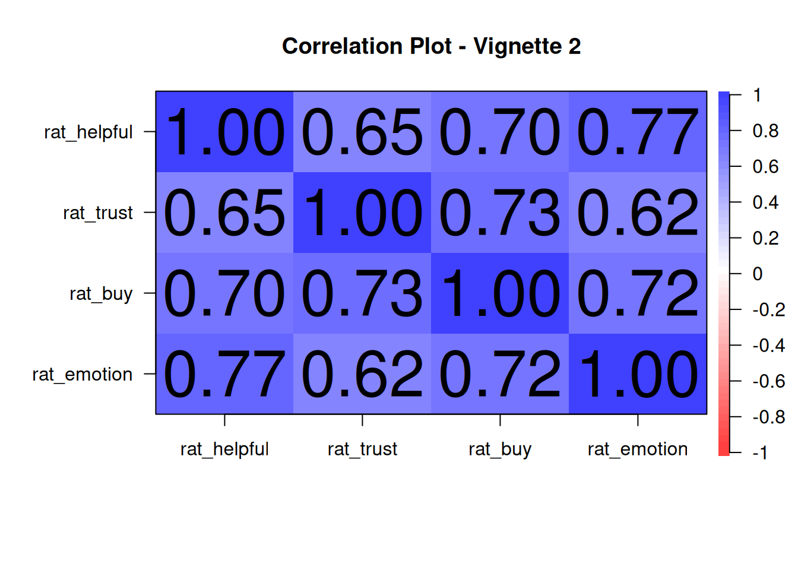
Parallel analysis: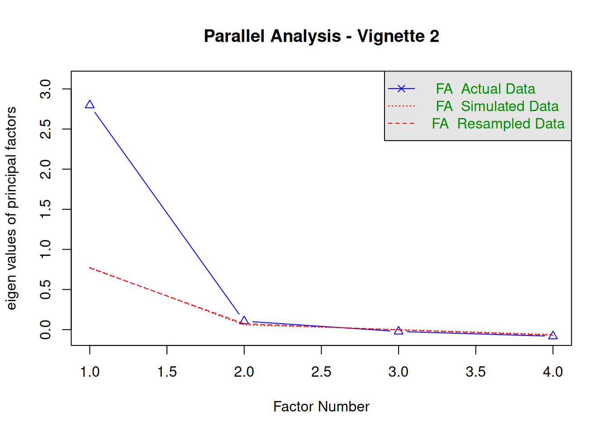
Parallel analysis suggests that the number of factors = 1 and the number of components = NA
Loadings:
ML1
rat_helpful 0.851
rat_trust 0.778
rat_buy 0.856
rat_emotion 0.857
ML1
SS loadings 2.797
Proportion Var 0.699
Selecting optimal number of clusters (k):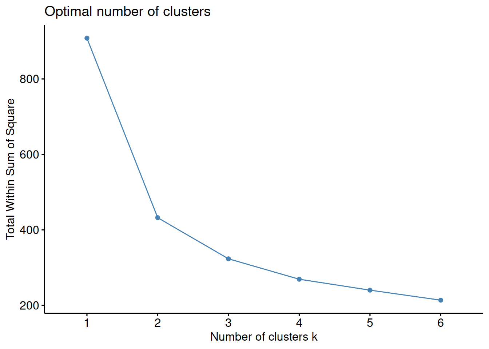
Auto-selected k = 5
K-means clustering results (k = 5 ):
[1] 70 38 36 50 34
=== Vignette: 3 ===
Correlation matrix:
Parallel analysis: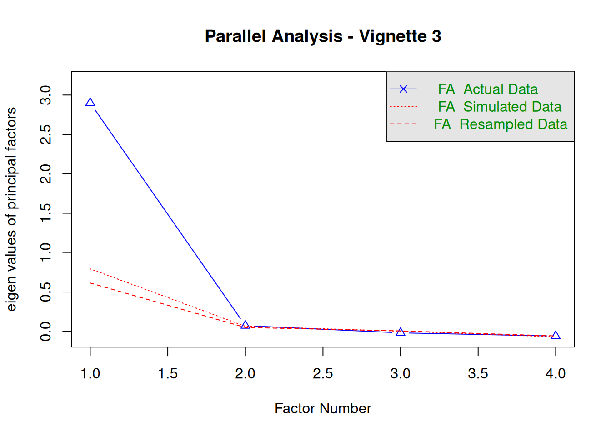
Parallel analysis suggests that the number of factors = 1 and the number of components = NA
Loadings:
ML1
rat_helpful 0.832
rat_trust 0.854
rat_buy 0.923
rat_emotion 0.789
ML1
SS loadings 2.897
Proportion Var 0.724
Selecting optimal number of clusters (k):
Auto-selected k = 5
K-means clustering results (k = 5 ):
[1] 22 66 26 58 56
=== Vignette: 4 ===
Correlation matrix: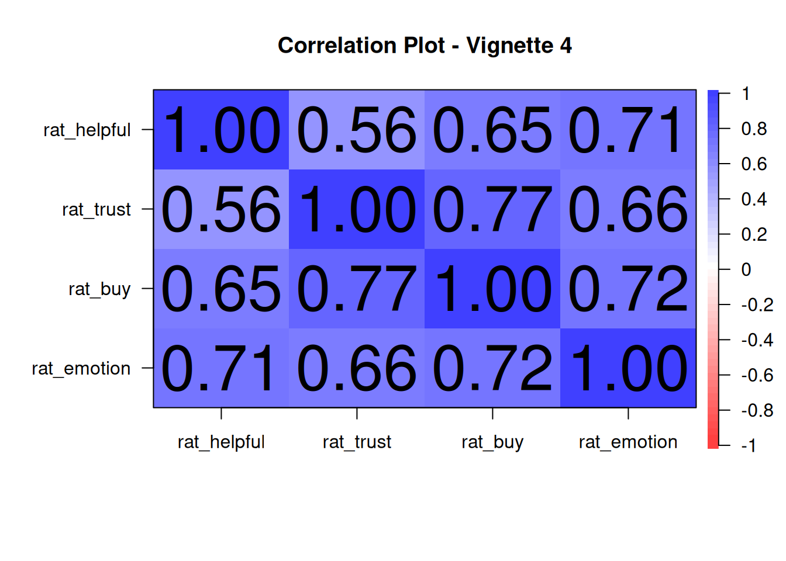
Parallel analysis:Parallel analysis suggests that the number of factors = 2 and the number of components = NA
Loadings:
ML1 ML2
rat_helpful 0.877
rat_trust 0.923
rat_buy 0.679 0.243
rat_emotion 0.200 0.692
ML1 ML2
SS loadings 1.356 1.308
Proportion Var 0.339 0.327
Cumulative Var 0.339 0.666
Selecting optimal number of clusters (k):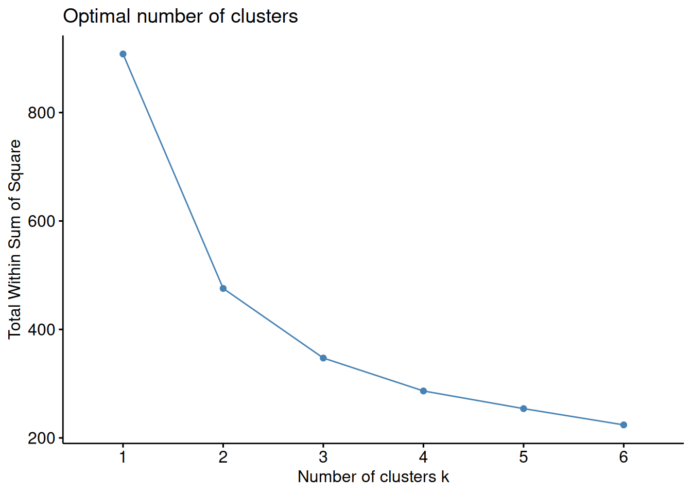
Auto-selected k = 5
K-means clustering results (k = 5 ):
[1] 71 15 42 40 60
=== Vignette: 5 ===
Correlation matrix: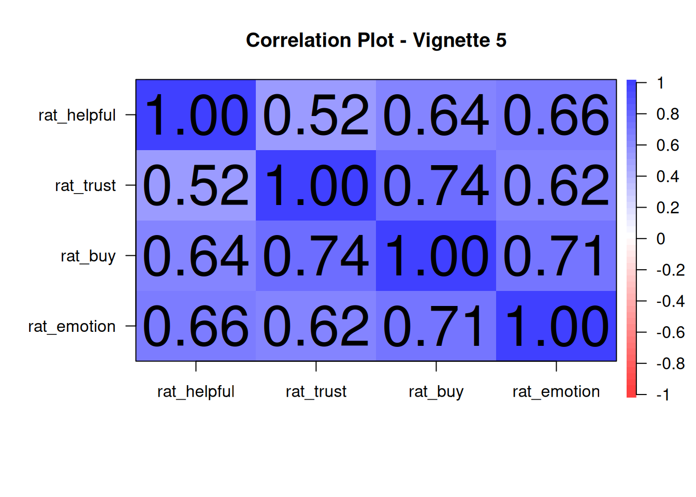
Parallel analysis: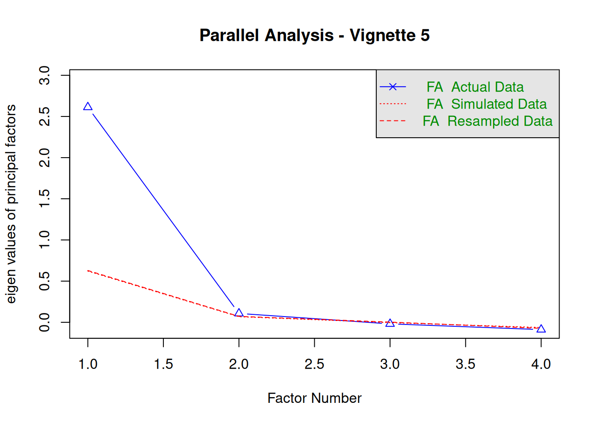
Parallel analysis suggests that the number of factors = 1 and the number of components = NA
Loadings:
ML1
rat_helpful 0.723
rat_trust 0.795
rat_buy 0.904
rat_emotion 0.800
ML1
SS loadings 2.611
Proportion Var 0.653
Selecting optimal number of clusters (k):
Auto-selected k = 4
K-means clustering results (k = 4 ):
[1] 44 71 33 80
=== Vignette: 6 ===
Correlation matrix:
Parallel analysis:Parallel analysis suggests that the number of factors = 1 and the number of components = NA
Loadings:
ML1
rat_helpful 0.649
rat_trust 0.771
rat_buy 0.864
rat_emotion 0.796
ML1
SS loadings 2.396
Proportion Var 0.599
Selecting optimal number of clusters (k):Auto-selected k = 5
K-means clustering results (k = 5 ):
[1] 52 28 65 57 26# === NEW: Combine all vignette cluster assignments into one data frame ===
cluster_df <- bind_rows(cluster_assignments)
# Preview
head(cluster_df) PROLIFIC_PID Vignette Cluster
1...1 63c08fa9f3882764b4e8e7dd 1 3
2...2 5fff0b0bcbc37a5f5928ed26 1 4
3...3 615dfd1954be2c1b879d6e26 1 4
4...4 627bbf69ab2788507bc421a2 1 3
5...5 60993696b2cca36f8aafd770 1 3
6...6 5e5832478c2b6f03f9acd234 1 1# Reshape to wide format: one row per PROLIFIC_PID, columns for each Vignette
cluster_wide <- cluster_df %>%
mutate(Vignette = paste0("V", Vignette)) %>%
pivot_wider(
names_from = Vignette,
values_from = Cluster
)
# View result
head(cluster_wide)# A tibble: 6 × 7
PROLIFIC_PID V1 V2 V3 V4 V5 V6
<chr> <int> <int> <int> <int> <int> <int>
1 63c08fa9f3882764b4e8e7dd 3 4 4 1 4 1
2 5fff0b0bcbc37a5f5928ed26 4 1 1 1 4 1
3 615dfd1954be2c1b879d6e26 4 1 5 4 2 3
4 627bbf69ab2788507bc421a2 3 3 2 5 2 3
5 60993696b2cca36f8aafd770 3 1 1 4 4 4
6 5e5832478c2b6f03f9acd234 1 2 3 5 1 5# Get vignette cluster columns (excluding PROLIFIC_PID)
vignette_cols <- setdiff(colnames(cluster_wide), "PROLIFIC_PID")
# All pairwise combinations of vignette cluster columns
combinations <- combn(vignette_cols, 2, simplify = FALSE)
# Run Chi-squared tests
for (pair in combinations) {
cat("\nChi-squared test between", pair[1], "and", pair[2], "\n")
tab <- table(cluster_wide[[pair[1]]], cluster_wide[[pair[2]]])
print(tab)
# Only run if the table has no 0-only rows/cols
if (all(rowSums(tab) > 0) && all(colSums(tab) > 0)) {
chisq <- chisq.test(tab)
print(chisq)
} else {
cat("Chi-squared test not valid due to empty rows/columns.\n")
}
}
Chi-squared test between V1 and V2
1 2 3 4 5
1 27 26 9 10 9
2 10 1 10 8 9
3 24 7 12 17 6
4 9 3 4 9 3
5 0 1 1 6 7Warning in chisq.test(tab): Chi-squared approximation may be incorrect
Pearson's Chi-squared test
data: tab
X-squared = 51.74, df = 16, p-value = 1.206e-05
Chi-squared test between V1 and V3
1 2 3 4 5
1 6 21 16 11 27
2 2 20 0 11 5
3 11 12 10 17 16
4 2 9 0 9 8
5 1 4 0 10 0Warning in chisq.test(tab): Chi-squared approximation may be incorrect
Pearson's Chi-squared test
data: tab
X-squared = 53.859, df = 16, p-value = 5.468e-06
Chi-squared test between V1 and V4
1 2 3 4 5
1 21 9 15 11 25
2 16 2 6 7 7
3 17 2 10 16 21
4 9 2 8 4 5
5 8 0 3 2 2Warning in chisq.test(tab): Chi-squared approximation may be incorrect
Pearson's Chi-squared test
data: tab
X-squared = 18.944, df = 16, p-value = 0.2716
Chi-squared test between V1 and V5
1 2 3 4
1 12 29 18 22
2 5 13 4 16
3 19 17 6 24
4 8 7 3 10
5 0 5 2 8Warning in chisq.test(tab): Chi-squared approximation may be incorrect
Pearson's Chi-squared test
data: tab
X-squared = 19.283, df = 12, p-value = 0.08192
Chi-squared test between V1 and V6
1 2 3 4 5
1 20 7 23 18 13
2 7 3 15 11 2
3 11 9 18 20 8
4 10 6 5 5 2
5 4 3 4 3 1Warning in chisq.test(tab): Chi-squared approximation may be incorrect
Pearson's Chi-squared test
data: tab
X-squared = 16.166, df = 16, p-value = 0.4415
Chi-squared test between V2 and V3
1 2 3 4 5
1 10 18 8 15 19
2 4 10 11 1 12
3 5 13 3 5 10
4 2 16 3 22 7
5 1 9 1 15 8Warning in chisq.test(tab): Chi-squared approximation may be incorrect
Pearson's Chi-squared test
data: tab
X-squared = 45.608, df = 16, p-value = 0.0001119
Chi-squared test between V2 and V4
1 2 3 4 5
1 22 5 11 11 21
2 7 9 4 3 15
3 10 0 2 13 11
4 19 1 12 7 11
5 13 0 13 6 2Warning in chisq.test(tab): Chi-squared approximation may be incorrect
Pearson's Chi-squared test
data: tab
X-squared = 57.872, df = 16, p-value = 1.19e-06
Chi-squared test between V2 and V5
1 2 3 4
1 10 27 11 22
2 7 10 12 9
3 13 10 5 8
4 9 17 3 21
5 5 7 2 20Warning in chisq.test(tab): Chi-squared approximation may be incorrect
Pearson's Chi-squared test
data: tab
X-squared = 31.111, df = 12, p-value = 0.001895
Chi-squared test between V2 and V6
1 2 3 4 5
1 15 4 22 18 11
2 4 6 10 10 8
3 4 9 10 10 3
4 15 7 13 12 3
5 14 2 10 7 1Warning in chisq.test(tab): Chi-squared approximation may be incorrect
Pearson's Chi-squared test
data: tab
X-squared = 28.523, df = 16, p-value = 0.02736
Chi-squared test between V3 and V4
1 2 3 4 5
1 4 1 2 5 10
2 30 2 10 12 12
3 4 6 0 3 13
4 21 1 26 9 1
5 12 5 4 11 24Warning in chisq.test(tab): Chi-squared approximation may be incorrect
Pearson's Chi-squared test
data: tab
X-squared = 87.094, df = 16, p-value = 8.551e-12
Chi-squared test between V3 and V5
1 2 3 4
1 8 4 3 7
2 11 30 3 22
3 8 5 11 2
4 4 12 2 40
5 13 20 14 9Warning in chisq.test(tab): Chi-squared approximation may be incorrect
Pearson's Chi-squared test
data: tab
X-squared = 77.531, df = 12, p-value = 1.218e-11
Chi-squared test between V3 and V6
1 2 3 4 5
1 3 3 3 9 4
2 14 8 28 15 1
3 0 5 5 6 10
4 27 7 15 7 2
5 8 5 14 20 9Warning in chisq.test(tab): Chi-squared approximation may be incorrect
Pearson's Chi-squared test
data: tab
X-squared = 68.246, df = 16, p-value = 2.02e-08
Chi-squared test between V4 and V5
1 2 3 4
1 14 27 7 23
2 2 3 9 1
3 2 9 1 30
4 10 9 1 20
5 16 23 15 6Warning in chisq.test(tab): Chi-squared approximation may be incorrect
Pearson's Chi-squared test
data: tab
X-squared = 80.181, df = 12, p-value = 3.812e-12
Chi-squared test between V4 and V6
1 2 3 4 5
1 18 9 24 16 4
2 1 0 1 6 7
3 25 2 8 4 3
4 5 10 16 9 0
5 3 7 16 22 12Warning in chisq.test(tab): Chi-squared approximation may be incorrect
Pearson's Chi-squared test
data: tab
X-squared = 88.93, df = 16, p-value = 3.936e-12
Chi-squared test between V5 and V6
1 2 3 4 5
1 5 15 3 16 5
2 6 2 37 22 4
3 1 1 2 12 17
4 40 10 23 7 0Warning in chisq.test(tab): Chi-squared approximation may be incorrect
Pearson's Chi-squared test
data: tab
X-squared = 163.24, df = 12, p-value < 2.2e-165 aaaa
### save files
setwd("outputs")
#> questionnaire
## save as .xlsx file
writexl::write_xlsx(x = questionnaire, path = "questionnaire.xlsx")
## save as R object
saveRDS(questionnaire, file = "questionnaire.rds")
#> wordlistAssociations
## save as .xlsx file
writexl::write_xlsx(x = wordlistAssociations, path = "wordlistAssociations.xlsx")
## save as R object
saveRDS(wordlistAssociations, file = "wordlistAssociations.rds")
#> edgelistAssociations
## save as .xlsx file
writexl::write_xlsx(x = edgelistAssociations, path = "edgelistAssociations.xlsx")
## save as R object
saveRDS(edgelistAssociations, file = "edgelistAssociations.rds")6 show data
DT::datatable(questionnaire, options = list(pageLength = 5))
summary(as.numeric(table(edgelistAssociations$ID)))
table(edgelistAssociations$ID)
DT::datatable(wordlistAssociations, options = list(pageLength = 5))
DT::datatable(edgelistAssociations, options = list(pageLength = 5))